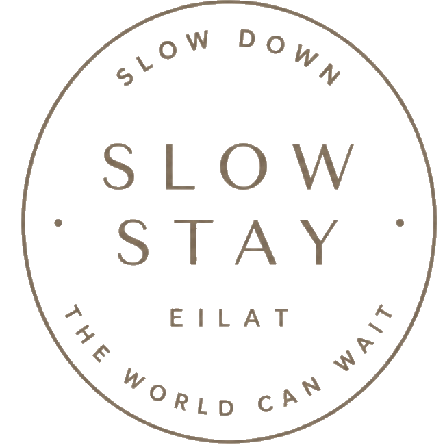

01SUNSET
SlowStay סאנסט
SlowStay Eilat - Sunset
105 ביקורות
ב-Booking
- חדר שינה אחד עם מיטה זוגית גדולה
- מיטת ספה
- עד 4 אורחים
- 40 מ"ר
- גינה וטרסה

THE SLOW GUIDE TO EILAT
ריכזנו עבורכם המלצות עם ניסיון של חיים שלמים באילת. תנו לנו לדעת מה חשבתם! סליחה מראש שההמלצות קצרות (אבל שוות) — את שאר המידע תוכלו להשלים בגוגל.
למדריך שלנו ↓THE APARTMENTS
Sunset, Calm ו-Pure. שלושה קצבים לאותו בית רגוע — פתחו את כל התמונות, וראו את הציון מ-Booking.
01SUNSET
SlowStay Eilat - Sunset
105 ביקורות
ב-Booking
02CALM
SlowStay Eilat - Calm
104 ביקורות
ב-Booking
03PURE
SlowStay Eilat - Pure
103 ביקורות
ב-Booking
BEFORE YOU ARRIVE
כל הדירות בקומת הקרקע.
אין חניה פרטית. יש חניית רחוב בשפע — לפי השילוט העירוני.
אין נוף לים.
כלב קטן היפואלרגני מותר בתיאום מראש.
CHOOSE YOUR MOOD
01START SLOW
קפה טוב, משהו טעים ליד, ואף סיבה למהר. שני המקומות האהובים עלינו לפתוח בהם את היום.
קפה, ארוחות בוקר ואפילו חומוס טוב עם בירה קרה.
לחמי מחמצת עשויים במקום, כריכים, קינוחים, עוגות, קפה, מוצרים מיוחדים ועוד.
02EAT LOCAL
מהמבורגר ליד הבית ועד ערב איטלקי — אלה הבחירות שלנו בעיר. הכשרות מסומנת לנוחותכם; תמיד כדאי לוודא מול המקום לפני ההגעה.
מסעדת בשרים, דגים ועוד — ממש פה ליד הבית.
המבורגר באמצע השבוע, ובשישי יש כריך שניצל פגז. ממש פה ליד הבית.
פשוט אוכל טעים של השף. ממש — הכול טעים.
ממש לא רחוק, עם המבורגרים טובים.
סושי מיוחד וטעים. בהזמנה כדאי לוודא שמביאים את כל הרטבים, הג׳ינג׳ר והווסאבי.
מסעדה אסייתית במלון רויאל גארדן.
מסעדה איטלקית עם דגים ובשרים.
אוכל תאילנדי כמו בתאילנד וסושי.
ממש לא רחוק — איטלקי חלבי, פשוט וטעים!
מסעדה אסייתית חדשה וטובה בקניון שבעת הכוכבים.
מבשלת בירה מקומית.
פיצות בטאבון, קוקטיילים ועוד.
פיצה רגילה של פעם, אבל טעימה. תבקשו שרוף טוב עם שומשום על הקשה! בשדרות התמרים.
בוטיק אוכל רחוב במיטבו, בשדרות התמרים. ההמלצה שלנו: תסביך — פלאפל על חציל וביצה קשה — או שניצל.
שווארמה או שניצל.
מסעדת על האש עם סלטים ולאפות.
המבורגר שף בטיילת הרודס.
לאוהבי המותג.
סניף מקדונלד׳ס הכשר במתחם BIG.
03FIND YOUR BEACH
באילת לא בוחרים רק ים — בוחרים קצב. מסודר או פראי, אוכל על המים או שנורקל בין האלמוגים.
יש שירות כיסאות ומקלחת.
לא לאנשים שאוהבים חוף מסודר, אבל זה האזור הכי יפה מתחת למים. יש ציליות גדולות; בואו מסודרים עם מחצלת, צידנית וכל מה שצריך.
מסעדת חוף על המים.
מסעדת חוף עם דגים ועוד, ממש על המים. לא כשר.
יש בר חוף, אוהל בדואי עם פיתות, לבנה ונוטלה, וגם מועדון צלילה.
אחלה חוף עם ציליות גדולות ומקלחת. צריך לבוא מסודרים עם מחצלת, צידנית וכל מה שצריך.
לכו לחוף עם הילדים, או ל״סתלבט על המים״ לחוויה רגועה.
חוף באווירת מוש. בחגים ובשבתות, כשהעיר עמוסה, מי שרוצה בוודאות מקום לשבת — שלא יגיע אחרי 10:00 בבוקר, ועדיף לפני.
לאורך הטיילת, עם חנויות, מסעדות וכניסה נוחה לים.
מסעדת חוף על המים.
מסעדת חוף באווירת טולום, עם מוזיקה.
יש מיטות שיזוף, כיסאות ושמשיות. קיוסק ומסעדות נמצאים קרוב על הטיילת, אם רוצים שתייה ואוכל.
04DESERT & SEA
ים סוף מצד אחד והרי אילת מהצד השני. הקדישו לפחות חצי יום לחוויה שהיא מעבר לבריכה ולטיילת.
דיפ סיאם, כפר הצוללים או סנובה.
טיולי מדבר בג׳יפים או בטרקטורונים.
Body & Soul.
05WITH KIDS
ההמלצה הראשונה שלנו תמיד תהיה הים. כשצריך הפסקה מהשמש, יש גם כמה אפשרויות מוצלחות בעיר.
תהיו בים — זו האופציה הכי טובה! רצוי להביא נעלי ים, בעיקר בחופים הדרומיים.
יש חוף ממש טוב לילדים עם כניסה נוחה למים.
פארק מים עם מתחם להורים, בר ומיטות שיזוף.
יש שני מתחמי משחקים לילדים; שניהם כוללים ג׳ימבורי, משחקי וידאו ומתקנים שונים.
06AFTER SUNSET
ערב או צהריים, דרינקים ואווירה — המקומות האילתיים שלנו להוריד בהם הילוך.
יין, נשנושים וערבי קונספט מיוחדים.
הביר גארדן של הרשת בטיילת דן.
בר־אוכל בסטייל תל־אביבי.
בר אילתי מיתולוגי.
OUR PERFECT SLOW DAY
קפה וארוחת בוקר בשושנה או בברויטמן.
שנורקל בחוף הדרומי, לפני שהרוח והעומס מגיעים.
מקלחת, מזגן, משהו קר ומנוחה אמיתית ב־Slow Stay.
דרינק מול הים או הליכה בטיילת כשהאור מתרכך.
עומר׳ס, פדרו או המקום שבדיוק התחשק לכם מהמדריך.
07AROUND THE HOUSE
מפת התמצאות פשוטה לאזור שסביב הבית. זמני ההליכה משוערים — באילת תמיד מומלץ להוסיף עוד דקה של הליכה איטית.
סופר אלימלך קטן אבל ממש קרוב — כחצי דקה הליכה. Carrefour מעט רחוק יותר — כדקה הליכה — עם מגוון רחב וכשרויות מהודרות.
באופן כללי, אין כמו ״המכולת שלי״: יש סניפים בכל העיר, פתוח עד מאוחר, יש שם הכול ובמחירים הוגנים.
באילת פועל שירות Wolt למשלוחי אוכל וקניות.
Super-Pharm נמצא במתחם BIG.
בית הכנסת ישורון, בראשות הרב אברהם חנו, נמצא מעבר לכביש ומתקיימים בו תפילות ושיעורים.
החניה ליד הבית היא בכחול־לבן.